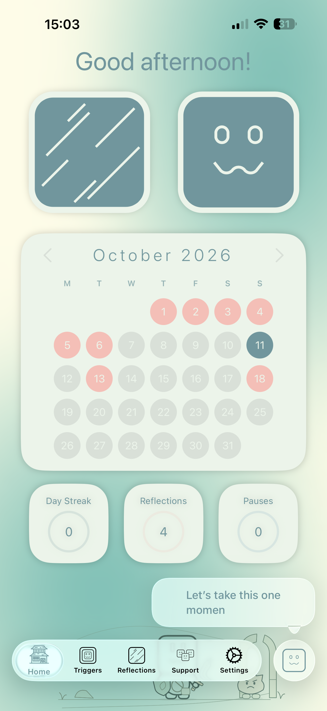
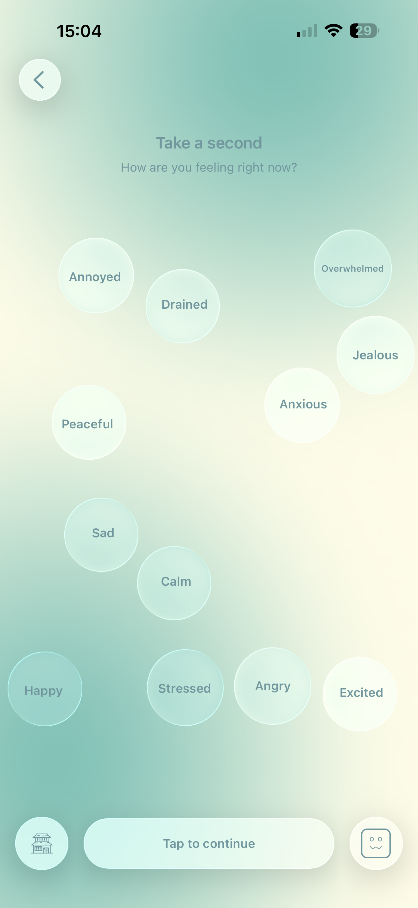
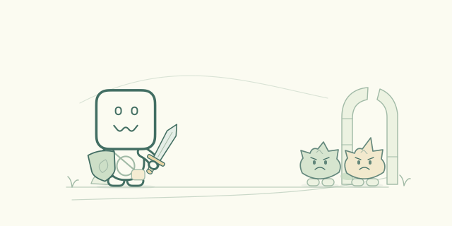
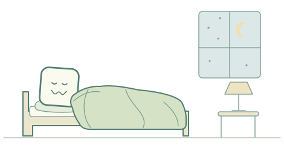

A little space
between feeling
and reacting.
Life happens. Give yourself a moment.
Capture what comes up, reflect when you’re ready,
and get to know your patterns with Triggers.


all of your feelings.
Start where you are.
No perfect words. No perfect days.
Just a small check-in with yourself.

A little pause. An honest check-in.

A LITTLE COMPANY ALONG THE WAYSmall moments.
A little more you.
A familiar face. A gently moving background. A place to slow down. Triggers brings a little warmth to the work of understanding yourself.
A small step.
A fresh perspective.
Triggers is in beta, and your experience can help shape it.
Try the app. Notice what works. Tell us what could feel better.

A few little answers.
What is Triggers?+
Triggers is an app for capturing triggering situations, checking in with your feelings, and returning to reflect on those moments later. It’s a place to notice patterns in everyday life.
How do I join the beta?+
Open the Triggers invitation on your iPhone. Follow the link to install Apple’s TestFlight app if you need it, then accept the invitation and install the available build.
How can I share feedback?+
Open TestFlight, select Triggers, and choose Send Beta Feedback. Ideas, things that feel confusing, and bugs you notice all help shape the app.